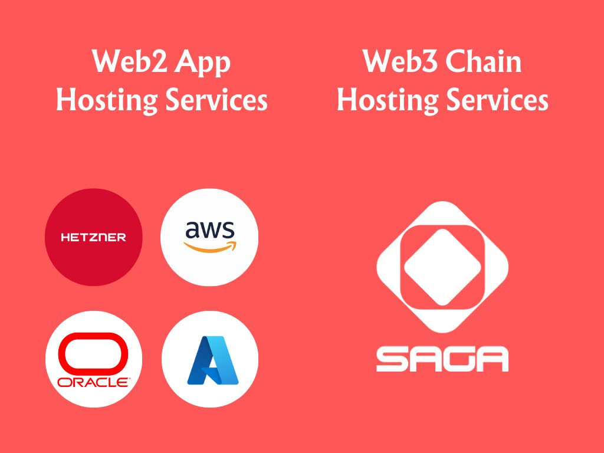
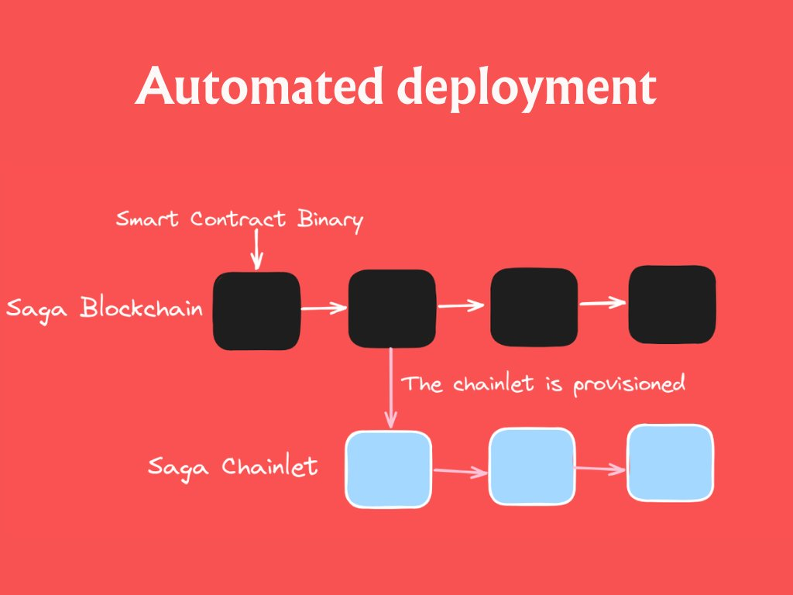
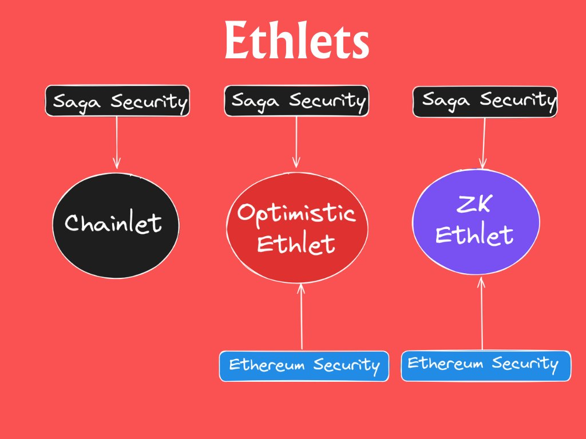
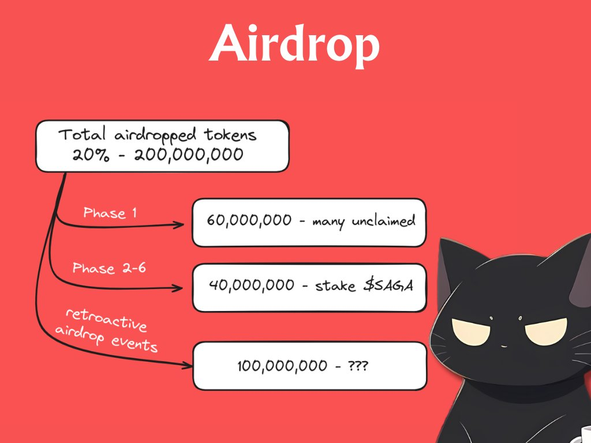

Introduction to Saga
Saga mainnet is going live in the coming days (at the time of uploading this blog, it's live already), and whether you're being airdropped any $SAGA tokens or not, this is a project/ecosystem that's worth your attention. Saga is revolutionizing Web3, making the production of quality projects easier.👇
The appchain thesis
Before getting to know what Saga is and what is offers, it's important understanding the Appchains thesis. A creator could just use Ethereum, Solana, or any other Layer 1 blockchain to launch their projects as a dApp. However, increasingly, developers prefer launching their products as app-specific blockchains for several reasons:➡️Independence
This approach reduces the risk of cascading failures from other systems. Builders don't have to worry if the chain they depend on is halted, underperforming, or demands high gas fees for a single transaction. Additionally, it enables creators to monetize their products more efficiently.
➡️Customization
Appchains can tweak their settings and features to suit different needs, like making things faster, safer, or more... specific. This means builders don't have to wait for updates that might never come or deal with infrastructure changes that don't matter to them.
➡️Cost-Effective, efficient and scale-able
Appchains independently manage resources such as network bandwidth, storage, and computational power, ensuring efficient performance without contention between dApps. Dedicated resources can handle more users and transactions as the application grows. In short, they are specialized chains focusing on specific tasks, performing them more efficiently than dApps on smart contract platforms. While appchains bring excellent infrastructure to a product, they often lack the essential security level and can be quite costly. This poses a significant challenge, particularly for small developers who lack the backing of a fund to set up their own chain.

What is Saga?
Saga is a chain enabling developers to effortlessly deploy a dedicated blockchain, known as "Chainlets," with a single-tenant VM, fully provisioned validators, and an optimally incentivized security structure. It functions as a blockchain-as-a-service, akin to launching a smart contract, simplifying the process for any developer. Similar to how AWS streamlined web application hosting for Web2 companies, Saga aims to do the same for blockchains and Web3 projects.

Why Saga?
This is the most interesting part of this thread, so pay attention. Here is how Saga is a competitive product and is helpful for any developer wanting to build a quality project. No upfront cost to launch a chain Launching a chain requires a significant investment of money, energy, and time. Saga simplifies this process by providing the infrastructure to spin up the chain for you. It's akin to renting your own server on AWS; Saga offers a similar service for chainlets. Predictable developer pricing Developers rent a chainlet and choose a timeframe and specific blockspace based on the applications that are going to be deployed. This makes the pricing of the chainlet predictable...with no surprises! Automated deployment The process of deploying a software application on a chainlet is fully automated. As a result, creators benefit from cost-effectiveness and faster time-to-market, freeing up resources to focus on more creative and strategic tasks. Competitive and Performant Chainlets are dedicated shared security chains for applications, boasting high throughput, independence from other applications using Saga, easy upgradability, and congestion relief. Developers can choose to use their preferred Virtual Machine (VM), with initial support for the Ethereum Virtual Machine (EVM), but more like CosmWasm and Solana VM are coming! No network fees to the end user Saga leaves monetization in the hands of developers, allowing them to decide how to generate revenue from their projects. Users do not directly pay the Saga chain as a backend provider. Transaction fees in any IBC-compatible token Because chainlets are designed to accommodate developers working on both new and established projects, Saga's token model allows the tokens of other protocols to accrue value (even though the Saga Chain serves as the backend).

Interchain Security & Chainlets
Chainlets are secured by the Saga blockchain and its validators through a mechanism called Interchain Security, a well-known shared-security system in Cosmos. Interchain security means that one blockchain, in this case Saga, provides security for other smaller blockchains (in this case the Chainlets). As a result, the Chainlets inherit the benefits of being a sovereign blockchain but outsource their block validation and validator set to Saga. Consequently, every single chainlet will be as decentralized as the Saga blockchain!
Saga vs Cosmos Hub Interchain Security
Saga and chainlets use almost the same code as Cosmos Hub and its consumer chains. However, there are two key differences!➡️Provisioning chainlets on Saga, is permissionless and automatic. In the opposite, governance decides which consumer chains are run by the Cosmos Hub validators.
➡️The Cosmos Hub offers flexibility to developers, while Saga restricts them from freely deploying any Cosmos SDK code they want

Ethereum & Ethlets
Saga can set up Chainlets to inherit Ethereum's security, similar to other rollups. There are various Ethereum scalability solutions like Zk Rollups and Optimistic Rollups, each with its own advantages and disadvantages. Saga aims to merge the strengths of these solutions, resulting in Optimistic & ZK Ethlets. These Ethlets offer the benefits of Saga Chainlets, such as configurability, speed, and cost-effectiveness, along with Ethereum security. The objective of an Ethlet is to provide an affordable Ethereum scaling solution with instant bridging!

New monetization models
What's interesting about Saga is that it enables developers to explore new monetization models that were previously not possible. End users are abstracted away from network fees and the developers can implement more flexible monetization methods!➡️Developers can typically implement standard gas fees but also have the flexibility to use any IBC-denominated token they prefer. Nothing special here, but still cool!
➡️ They may also implement a subscription service where only whitelisted users (subscribers) may use the smart contracts.
➡️The developer can also choose to make their product free for end users with monetization coming from other sources like advertisements.

How is the cost decided?
Saga does not have a fixed "cost" for launching and securing a chainlet. Instead, the cost varies based on the specific needs of the chainlet, such as block space and virtual machine requirements, as well as the rates set by validators for offering their services to that particular chainlet. Saga employs a mechanism known as "musical chairs," where validators compete against each other to provide the best (cheapest) offer to clients (developers). This fosters an ongoing competition among validators to optimize their services efficiently and offer them at the lowest possible cost. This approach ensures decentralization and encourages validators to continually improve their efficiency. Saga uses a simple inflation model where the inflation rate is determined by the total percentage of locked Saga tokens. Stakers delegate their tokens to the Saga validators and support them in providing the best services while also being profitable. In the long run, the goal is to establish an economic system where the entirety of the validator’s costs and margins is fully covered by the fees, and the commissions are set to 0 or even negative! Traditionally in Cosmos-based projects, the validator active set is determined solely by the delegation count. In Saga, only the cheapest validators will be selected as the active set, and the delegation process will incentivize validators to lower prices.
Airdrop
The first phase of the $SAGA airdrop has ended, and the tokens will be available to users once the mainnet is live! However, we're far from done with the $SAGA airdrop yet! There are 5 more phases coming up! This, along with the fact that many users missed out on claiming during the first phase of the airdrop, is an aspect that most people ignore. Make sure to stake your $SAGA, as this could be a criterion for the "real" $SAGA airdrop (could also be a criterion for future Chainlets airdrops). After all, the Saga team has demonstrated that they value loyalty, and the distribution strategy they chose indicates that they want to reward true supporters. Half of the airdropped tokens will be distributed retroactively after phase 6. This could involve an airdrop to quality product developers using chainlets, top-performing validators, or even valuable community contributors. Once again, Saga values loyalty. 😉

Thanks for reading!
If you liked this blog, make sure to follow me on twitter/X, as this where all my threads are uploaded first!Also, feel free to DM me on twitter or telegram for any questions (or even for a small talk). I am always open and welcoming!